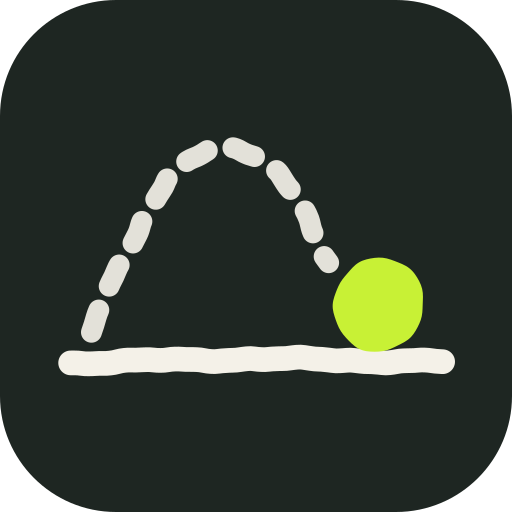
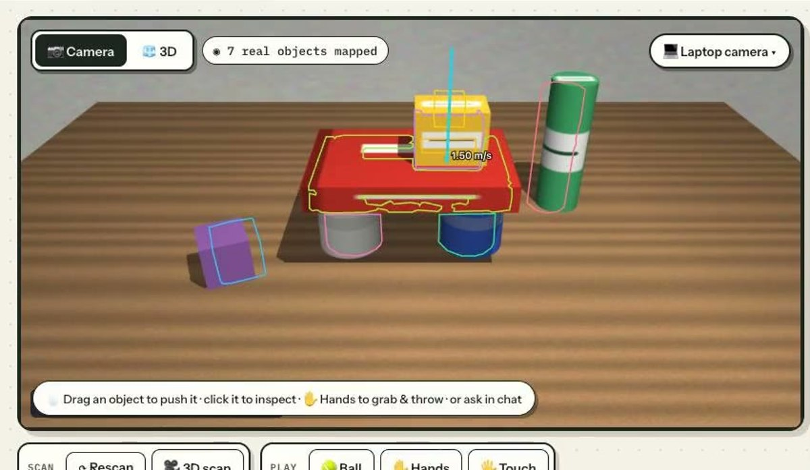
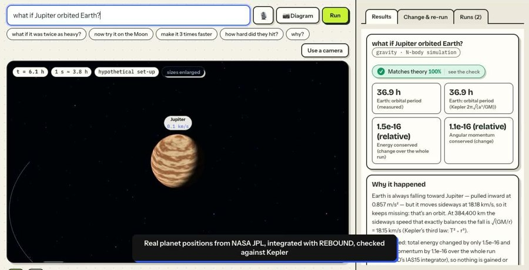

Point a camera at the real world, or just describe one. Ask “what if?” and get a real simulation, checked against theory. Free and on-device.


Your desk, a diagram, or a world you only describe: ask “what if?”, push things with your real hand, and check every answer against theory.
What you imagine,
you can simulate.
Your desk, a diagram, or a world you only describe: ask “what if?”, push things with your real hand, and check every answer against theory.